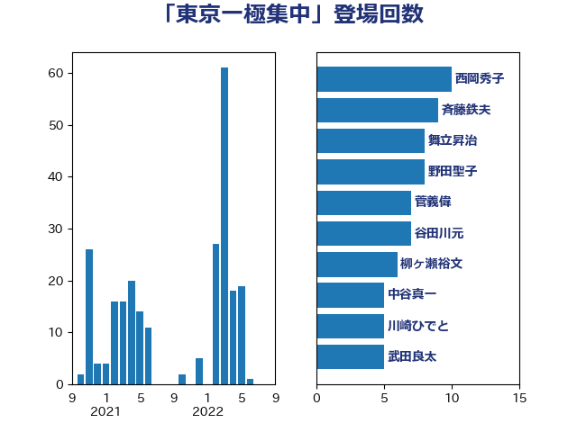

単語「東京一極集中」

| 西岡秀子 | 国民民主党 | 10 回 |
| 斉藤鉄夫 | 公明党 | 9 回 |
| 舞立昇治 | 自由民主党 | 8 回 |
| 野田聖子 | 自由民主党 | 8 回 |
| 菅義偉 | 自由民主党 | 7 回 |
| 谷田川元 | 立憲民主党 | 7 回 |
| 柳ヶ瀬裕文 | 日本維新の会 | 6 回 |
| 中谷真一 | 自由民主党 | 5 回 |
| 川崎ひでと | 自由民主党 | 5 回 |
| 武田良太 | 自由民主党 | 5 回 |
| 福田昭夫 | 立憲民主党 | 5 回 |
| 金子恭之 | 自由民主党 | 5 回 |
| 森本真治 | 立憲民主党 | 4 回 |
| 渡辺猛之 | 自由民主党 | 4 回 |
| 美延映夫 | 日本維新の会 | 4 回 |
| 赤羽一嘉 | 公明党 | 4 回 |
| おおつき紅葉 | 立憲民主党 | 3 回 |
| 住吉寛紀 | 日本維新の会 | 3 回 |
| 吉田宣弘 | 公明党 | 3 回 |
| 坂本哲志 | 自由民主党 | 3 回 |
| 岩谷良平 | 日本維新の会 | 3 回 |
| 岸真紀子 | 立憲民主党 | 3 回 |
| 斎藤嘉隆 | 立憲民主党 | 3 回 |
| 伊藤孝江 | 公明党 | 2 回 |
| 古川元久 | 国民民主党 | 2 回 |
| 浅田均 | 日本維新の会 | 2 回 |
| 西村康稔 | 自由民主党 | 2 回 |
| 越智隆雄 | 自由民主党 | 2 回 |
| 音喜多駿 | 日本維新の会 | 2 回 |
| ながえ孝子 | 無所属 | 1 回 |
| 三ッ林裕巳 | 自由民主党 | 1 回 |
| 三木亨 | 自由民主党 | 1 回 |
| 上野通子 | 自由民主党 | 1 回 |
| 世耕弘成 | 自由民主党 | 1 回 |
| 中司宏 | 日本維新の会 | 1 回 |
| 中川宏昌 | 公明党 | 1 回 |
| 井坂信彦 | 立憲民主党 | 1 回 |
| 伊藤孝恵 | 国民民主党 | 1 回 |
| 佐々木紀 | 自由民主党 | 1 回 |
| 加田裕之 | 自由民主党 | 1 回 |
| 加藤鮎子 | 自由民主党 | 1 回 |
| 吉川赳 | 無所属 | 1 回 |
| 吉田統彦 | 立憲民主党 | 1 回 |
| 城井崇 | 立憲民主党 | 1 回 |
| 大野泰正 | 自由民主党 | 1 回 |
| 安江伸夫 | 公明党 | 1 回 |
| 室井邦彦 | 日本維新の会 | 1 回 |
| 宮本周司 | 自由民主党 | 1 回 |
| 小倉將信 | 自由民主党 | 1 回 |
| 小林茂樹 | 自由民主党 | 1 回 |
| 小野泰輔 | 日本維新の会 | 1 回 |
| 朝日健太郎 | 自由民主党 | 1 回 |
| 松野博一 | 自由民主党 | 1 回 |
| 柴田巧 | 日本維新の会 | 1 回 |
| 沢田良 | 日本維新の会 | 1 回 |
| 浜口誠 | 国民民主党 | 1 回 |
| 片山さつき | 自由民主党 | 1 回 |
| 片山大介 | 日本維新の会 | 1 回 |
| 田畑裕明 | 自由民主党 | 1 回 |
| 石井啓一 | 公明党 | 1 回 |
| 石井正弘 | 自由民主党 | 1 回 |
| 石井苗子 | 日本維新の会 | 1 回 |
| 石川香織 | 立憲民主党 | 1 回 |
| 竹内譲 | 公明党 | 1 回 |
| 船田元 | 自由民主党 | 1 回 |
| 芳賀道也 | 国民民主党 | 1 回 |
| 若宮健嗣 | 自由民主党 | 1 回 |
| 藤田文武 | 日本維新の会 | 1 回 |
| 谷公一 | 自由民主党 | 1 回 |
| 酒井庸行 | 自由民主党 | 1 回 |
| 鈴木英敬 | 自由民主党 | 1 回 |
| 馬場伸幸 | 日本維新の会 | 1 回 |
| 高木かおり | 日本維新の会 | 1 回 |
| 高橋光男 | 公明党 | 1 回 |
| 高橋千鶴子 | 日本共産党 | 1 回 |
| 鳩山二郎 | 自由民主党 | 1 回 |